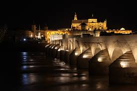
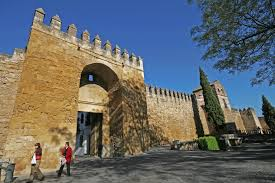
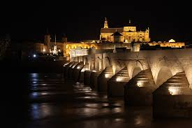
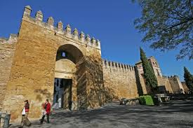

INTRODUCCIÓN
 



Córdoba, ciudad milenaria, posee el segundo casco histórico más grande de Europa, el mayor espacio urbano del mundo declarado Patrimonio de la Humanidad por la Unesco. Es precisamente en él donde se aglomera gran parte de los edificios históricos de la ciudad. En él cabe destacar el edificio más importante y símbolo de la ciudad, la mezquita de Córdoba y actual catedral que, junto al Puente Romano, forman la más conocida faceta de la ciudad. De la época romana pueden encontrarse, además del puente, el Templo romano situado en la calle Capitulares y dedicado en su tiempo al culto imperial, el teatro romano situado bajo el Museo Arqueológico y Etnológico de Córdoba; es el más grande conocido de toda Hispania, el mausoleo romano dedicado a una familia acomodada de la época, el foro colonial, el foro adiectum, el anfiteatro y los restos del palacio del emperador Maximiano Hercúleo en el yacimiento arqueológico de Cercadilla.
Cerca de la mezquita-catedral se emplaza la antigua judería formada por multitud de calles irregulares, tales como calleja de las Flores y la calleja del Pañuelo, en las que pueden visitarse la sinagoga y la casa de Sefarad. En el extremo suroeste del casco antiguo se encuentra el alcázar de los Reyes Cristianos, antiguo alojamiento de los reyes y sede de la Inquisición, y adyacente al mismo se hallan las Caballerizas Reales, lugar de crianza del caballo andaluz. Cerca de las caballerizas se encuentran, junto a la muralla, los antiguos baños califales. En el sur del casco antiguo y al este de la mezquita, situada en la plaza del Potro, se halla la Posada del Potro, mencionada en obras literarias como Don Quijote y La Feria de los Discretos. Tanto la posada como la plaza reciben su nombre de la fuente situada en el centro de la plaza, la cual representa a un potrillo. No lejos de esta plaza se encuentra el arco del Portillo.
A lo largo del cauce del Guadalquivir se encuentran los molinos del Guadalquivir, edificios de la época musulmana que aprovechaban la fuerza de la corriente para moler la harina tales como el molino de la Albolafia, el molino de la Alegría, el molino de Martos, el molino de Enmedio, el molino de Salmoral, el molino de San Antonio, el molino de Hierro, el molino de Téllez, el molino San Rafael y el molino de Don Tello o Pápalo Tierno.
Rodeando el extenso casco histórico se sitúa la antigua muralla romana, de la cual se conservan algunos lienzos; la puerta de Almodóvar, la puerta de Sevilla y la puerta del Puente, que son las tres únicas puertas que se conservan de las trece que tuvo la ciudad; algunas torres como la torre de la Malmuerta, la torre de Belén y la torre de la Puerta del Rincón; y las fortalezas de la torre de la Calahorra y la torre de los Donceles.
Repartidos por todo el casco antiguo se encuentran edificios palaciegos tales como el palacio de Viana, palacio de la Merced, palacio de Orive, palacio de los Aguayos, palacio de los Luna, palacio del duque de Medina Sidonia, palacio de los marqueses del Carpio y el palacio del marqués de Benamejí, entre otros.